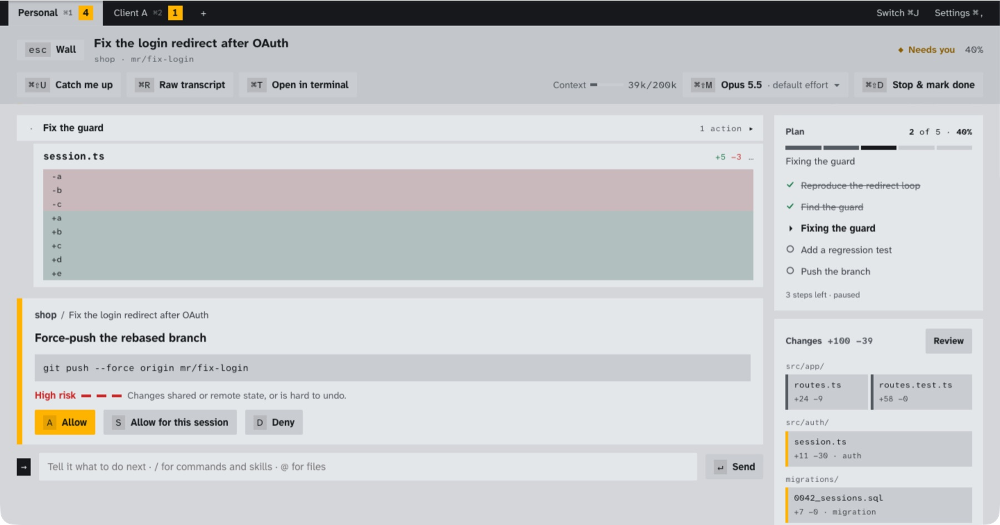

Focus on one session
Its plan with progress, the change map, and the exact command waiting for you. Catch up in one click with ⌘⇧U.

Plan it before any code
Plan sessions write a working doc. Each block gets the visual that fits it: metrics, scope lists, flows, risk tables. The open questions stay pinned to the side until you answer them.

See who will need you next
Solid lines are what happened, dashed lines what's predicted. Cockpit tells you which session to handle now and which ones finish on their own.

Review without the wall of diff
The risky snippets first, findings ranked, one key to note each one. Your notes become the PR comments.